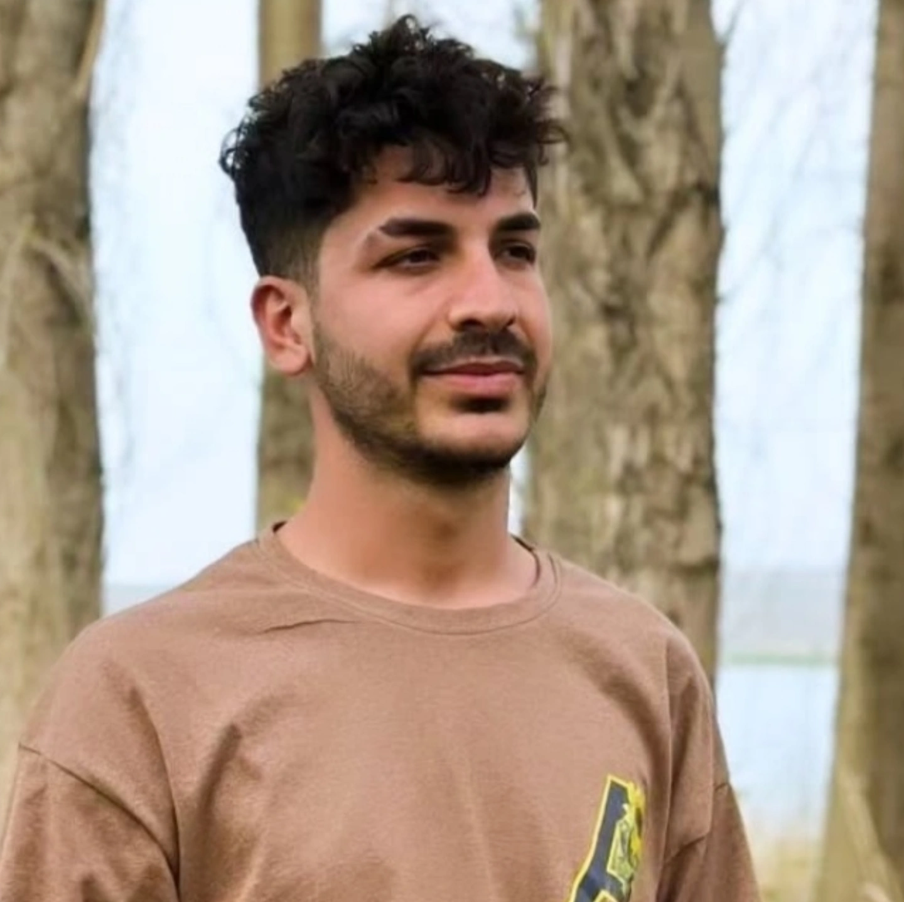

Hem yazılımın dijital dünyasında kod üretiyor, hem de fiber altyapı, elektrik-elektronik ve endüstriyel saha işlerinde profesyonel çözümler sunuyorum.

01.08.2003
Şanlıurfa
Şanlıurfa'da doğup büyüdüm. Teknolojik gelişmelere olan merakımı Van Yüzüncü Yıl Üniversitesi'nde Bilgisayar Programcılığı eğitimi alarak akademik bir zemine taşıdım. Dijital dünyanın yanında, sahadaki pratik süreçlerde de aktif olarak yer alarak elektrik, elektronik, fiber optik altyapı ve yapı sektörlerinde kapsamlı bir deneyim kazandım. Teorik bilgiyi fiziksel iş gücü ve mühendislik becerileriyle birleştirmeyi seviyorum.
Temel eğitim hayatıma Şanlıurfa'da ilk adımı attığım yer.
Eğitim sürecimi başarıyla sürdürdüğüm ortaöğrenim dönemi.
Teknik ve mesleki becerilerimin temelini oluşturduğum lise dönemi.
Bilgisayar Programcılığı bölümü ile yazılım, algoritma ve teknoloji üzerine profesyonel eğitim aldım.
Alçak Gerilim ve Orta Gerilim elektrik şebekeleri ve altyapı sistemleri kurulumu.
Yüksek hızlı veri iletimi için fiber optik kablolama, sonlandırma ve altyapı çözümleri.
Bina ve sanayi tipi elektrik tesisatları, arıza bakımı ve elektronik sistem montajları.
Güvenlik kamera sistemleri altyapı kurulumu, IP ve Analog kamera devreye alma.
Metal işleme, kaynak işleri ve yapı inşaat süreçlerinde saha pratikleri.
Toprak işleme, tarımsal üretim ve modern üretim süreçleri yönetimi.
Projeleriniz, iş birlikleriniz veya sorularınız için bana aşağıdaki kanallardan ulaşabilirsiniz.